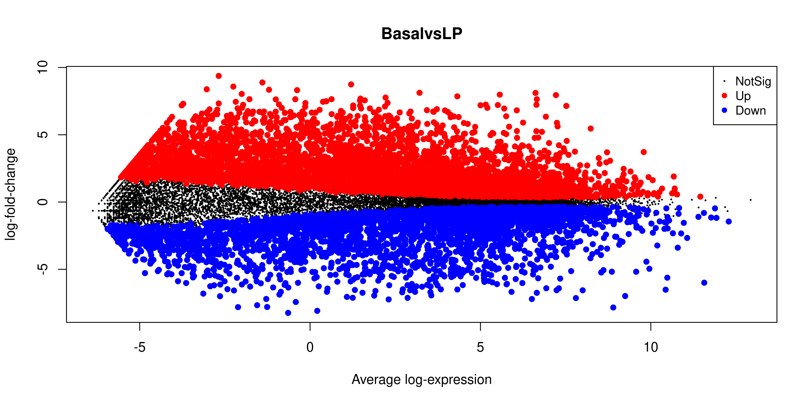

The next step of the limma-voom analysis is to fit a linear model for each gene. A linear model is a broad class of statistical models that predict a variable of interest using one or more ‘explanatory’ (also called ‘predictor’) variables. The most basic type is linear regression, which models the relationship between a continuous variable and continuous or categorical ‘explanatory’ variables. It uses an equation that looks like this:
This equation is saying that a response variable of interest \(Y\) is equal to a constant (\(\beta_{0}\)) plus the sum of the covariates (\(X_{i}\)) each multiplied by a constant coefficient (\(\beta_{i}\)).
Our experiment is quite simple, since there is only a single covariate, the cell type. The true benefit of using linear models is in its ability to accommodate more complex designs including multiple covariates.
To fit the linear models in the limma-voom framework we need two objects in addition to our data:
A design matrix, representing the covariates.
A contrast matrix, representing the specific comparison we wish to make.
6.1.1 Design matrix
The design matrix specifies the values of the covariates for each sample. This is represented as a matrix due to the mathematical convenience.
To generate a design matrix. We use the function model.matrix(), with the expression ~0 + group. This returns a matrix representing the design where there is no intercept term and group is the only covariate. If we omit the 0 then there would be an intercept in the model, and if we included more covariates then more columns would be generated.
design <-model.matrix(~0+ group, data = dge$samples)design
There are 9 rows, one for each sample. Along the columns are the names of the groups. The values in the cells denote membership of the particular sample for a particular group, as our groups in this case are mutually exclusive, each row contains only a single 1 to denote membership in a single group.
6.1.2 Contrasts
‘Contrasts’ let us ask specific questions between our experimental groups. In our data we have 3 experimental groups, if we are to test for differential expression, we are most likely interested in differences between only two of the groups at a time. Contrasts let us specify exactly what we’re testing for, and is also represented by a matrix just like the design.
A contrast matrix can be made using the makeContrasts() function. Within this function, we specify the name of each specific contrast and the formula for that contrast. For example, the BasalvsLP contrasts compares the difference between the Basal and LP groups. Note that the name of the phenotype groups must be written exactly as they are in the column names of our design matrix (see above).
In addition to the individual contrasts, the function must know about the design of the model. This is passed through the levels argument, which either accepts a matrix with the column names corresponding to levels of your experimental groups, or the levels themselves as a character vector
Note that the sum of all the numbers along each column is 0. The first column is the contrast for the difference between Basal (1) and LP (-1). This property is required for valid contrast matrices. An alternative test may be between one group and the average of the others which would look like c(1, -0.5, -0.5) down one of the columns.
6.1.3 Variance modelling with voom
We are now ready to fit our linear models. Limma fits linear models to the data with the assumption that the underlying data is normally distributed. Count data is generally not normally distributed, but log transforming count data gives it a roughly normal distribution sufficient for linear models to work well. To do this, limma transforms the raw count data to log-cpm using library sizes and the normalisation factors we calculated previously.
In addition to the normalisation steps, the limma-voom pipeline uses the voom() function to generate weights for the individual genes based on a modelled mean-variance relationship. This modelling allows use to get more information out of small sample sizes as the weights prevent our model from being more heavily influenced by more variable data points.
The voom() function takes as arguments, our DGEList object and our design matrix. It also optionally outputs a plot of the mean-variance relationship of our data, called the ‘voom-plot’.
v <-voom(dge, design, plot =TRUE)
The output of voom() (our variable v) is an EList object which contains the following elements:
genes - a data frame of gene annotation data.
targets - data frame of sample data.
E - numeric matrix of normalised log-cpm values.
weights - numeric matrix of precision weights.
design - the design matrix.
6.1.4 Fitting the linear model
We are now ready to fit our linear model with lmFit(), which calculates coefficients we defined in our design matrix design. The resulting object, vfit is a MArrayLM object. It contains a information about our genes (the same data frame as genes from our EList object v above), the design matrix and a number of statistical outputs. Of most interest to us is the coefficients, stored in an element called coefficients. The first rows of this matrix is shown below. Each gene is row and is labelled using the EntrezID. Each column gives coefficients for each of our phenotype groups. These coefficients are weighted averages of the log-cpm of each gene in each group.
We can then use contrasts.fit() to calculate coefficients for each contrast (or ‘comparison’) we specified in our contr.matrix. The output is also an object of the class MArrayLM (also known as an MArrayLM object). When we inspect the coefficients element now, we can see that each column is a contrast that we specified in our contrast matrix.
The next step is to carry out statistical testing to determine which genes are differentially expressed. The function eBayes() computes moderated t-statistics, moderated F-statistics and log-odds of differential expression for each gene, given a fitted linear model. ‘Moderated’ refers to empirical Bayes moderation, which borrows information across genes to obtain more accurate measures of variability for each gene. This also increases our power to detect differentially expressed genes.
efit <-eBayes(vfit)
We can now look at the number of differentially expressed genes using the decideTests() function. The output of this function is a matrix where each column is a contrast (comparison of interest) and each row is a gene. The numbers 1, -1 and 0 mean up-regulated, down-regulated or not significantly differentially expressed, respectively.
Note that decideTests() also accounts for multiple testing. The default method is Benjamini and Hochberg1 but several others are also available.
To obtain the total number of differentially expressed genes for each comparison, we can add the function summary():
summary(dt)
BasalvsLP BasalvsML LPvsML
Down 3877 5004 3472
NotSig 17519 17182 22163
Up 5783 4993 1544
The function topTable() can be used to obtain more information on the differentially expressed genes for each contrast. topTable() takes as arguments the MArrayLM object output by eBayes() (efit), the contrast name of interest and the number of top differentially expressed genes to output. Note that the contrast name must be given in quotes and must be exactly as written in the contrast matrix contr.matrix.
It outputs a data frame with the following information:
Gene details - gene information, from the gene element of the MArrayLM object (efit).
logFC - the log2 fold change of the contrast.
AveExpr - the average log2 expression of that gene.
t - moderated t-statistic.
P.Value - p value.
adj.P.Val - adjusted p value.
B - log-odds that the gene is differentially expressed.
top <-topTable(efit, coef ="BasalvsLP", n =Inf)head(top)
With that we can complete our analysis by writing out some results
write.csv(top, file ="BasalvsLP.csv")
6.3 MA Plot
The MA plot is a plot of log-fold-change (M-values) against log-expression averages (A-values), this is a common plot in RNA sequencing analysis to visualise the result of differential expression tests. It can be created using the plotMA() from the limma package. Creating this plot requires 3 pieces of information:
object = efit: The the fitted object containing the log-fold-change and log-expression averages
coef = 1: The column number of the contrast to plot since there are 3 different contrasts fitted within the object.
status = dt[, 1]: A vector of numerics denoting whether a gene is up-regulated or down-regulated.
plotMA(efit, coef =1, status = dt[, "BasalvsLP"])

We can also save this plot programmatically as a PDF for further editing. To do this we use pdf() to turn on the pdf capture device, run the command that creates the plot, which is now captured by the pdf, and then turn the device off.
pdf(file ="BasalvsLP-MAPlot.pdf")plotMA(efit, coef =1, status = dt[, "BasalvsLP"])dev.off()
6.4 References
1.
Benjamini Y, Hochberg Y. Controlling the False Discovery Rate: A Practical and Powerful Approach to Multiple Testing. Journal of the Royal Statistical Society Series B: Statistical Methodology [Internet]. 1995 Jan 1;57(1):289–300. Available from: http://dx.doi.org/10.1111/j.2517-6161.1995.tb02031.x
Source Code
---filters: - naquizformat: html: toc: true toc-location: left toc-title: "In this session:"---# Session 6: RNA-seq part 2```{r}library(edgeR)library(limma)# vector of file namesfiles <-dir(path ="data/counts", pattern ="GSM")group <-factor(c("LP", "ML", "Basal", "Basal","ML", "LP", "Basal", "ML", "LP"))samplenames <-c("10_6_5_11", "9_6_5_11", "purep53", "JMS8-2", "JMS8-3","JMS8-4", "JMS8-5", "JMS9-P7c", "JMS9-P8c")# create DGEList objectdge <-readDGE( files,path ="data/counts",columns =c(1, 3),group = group,labels = samplenames)# add gene annotation informationdge$genes <-read.delim("data/Ses3_geneAnnot.tsv", stringsAsFactors =FALSE)```## Linear modellingThe next step of the limma-voom analysis is to fit a linear model for each gene. A linear model is a broad class of statistical models that predict a variable of interest using one or more 'explanatory' (also called 'predictor') variables. The most basic type is linear regression, which models the relationship between a continuous variable and continuous or categorical 'explanatory' variables. It uses an equation that looks like this:$Y = \beta_{0} + \beta_{1}X_{1} + \beta_{2}X_{2}...$This equation is saying that a response variable of interest $Y$ is equal to a constant ($\beta_{0}$) plus the sum of the covariates ($X_{i}$) each multiplied by a constant coefficient ($\beta_{i}$).Our experiment is quite simple, since there is only a single covariate, the cell type. The true benefit of using linear models is in its ability to accommodate more complex designs including multiple covariates.To fit the linear models in the limma-voom framework we need two objects in addition to our data:- A design matrix, representing the covariates.- A contrast matrix, representing the specific comparison we wish to make.### Design matrixThe design matrix specifies the values of the covariates for each sample. This is represented as a matrix due to the mathematical convenience.To generate a design matrix. We use the function `model.matrix()`, with the expression `~0 + group`. This returns a matrix representing the design where there is no intercept term and group is the only covariate. If we omit the `0` then there would be an intercept in the model, and if we included more covariates then more columns would be generated.```{r}design <-model.matrix(~0+ group, data = dge$samples)design```There are 9 rows, one for each sample. Along the columns are the names of the groups. The values in the cells denote membership of the particular sample for a particular group, as our groups in this case are mutually exclusive, each row contains only a single 1 to denote membership in a single group.### Contrasts'Contrasts' let us ask specific questions between our experimental groups. In our data we have 3 experimental groups, if we are to test for differential expression, we are most likely interested in differences between only two of the groups at a time. Contrasts let us specify exactly what we're testing for, and is also represented by a matrix just like the design.A contrast matrix can be made using the `makeContrasts()` function. Within this function, we specify the name of each specific contrast and the formula for that contrast. For example, the `BasalvsLP` contrasts compares the difference between the `Basal` and `LP` groups. Note that the name of the phenotype groups must be written exactly as they are in the column names of our design matrix (see above).In addition to the individual contrasts, the function must know about the design of the model. This is passed through the `levels` argument, which either accepts a matrix with the column names corresponding to levels of your experimental groups, or the levels themselves as a character vector```{r, echo=FALSE}colnames(design) <- c("Basal", "LP", "ML")``````{r}contr.matrix <-makeContrasts(BasalvsLP ="Basal - LP",BasalvsML ="Basal - ML",LPvsML ="LP - ML",levels = design) # alternatively 'levels = colnames(design)'contr.matrix```Note that the sum of all the numbers along each column is 0. The first column is the contrast for the difference between Basal (1) and LP (-1). This property is required for valid contrast matrices. An alternative test may be between one group and the average of the others which would look like `c(1, -0.5, -0.5)` down one of the columns.### Variance modelling with voomWe are now ready to fit our linear models. Limma fits linear models to the data with the assumption that the underlying data is normally distributed. Count data is generally not normally distributed, but log transforming count data gives it a roughly normal distribution sufficient for linear models to work well. To do this, limma transforms the raw count data to log-cpm using library sizes and the normalisation factors we calculated previously.In addition to the normalisation steps, the limma-voom pipeline uses the `voom()` function to generate weights for the individual genes based on a modelled mean-variance relationship. This modelling allows use to get more information out of small sample sizes as the weights prevent our model from being more heavily influenced by more variable data points.The `voom()` function takes as arguments, our `DGEList` object and our design matrix. It also optionally outputs a plot of the mean-variance relationship of our data, called the 'voom-plot'.```{r}v <-voom(dge, design, plot =TRUE)```The output of `voom()` (our variable `v`) is an `EList` object which contains the following elements:- `genes` - a data frame of gene annotation data.- `targets` - data frame of sample data.- `E` - numeric matrix of normalised log-cpm values.- `weights` - numeric matrix of precision weights.- `design` - the design matrix.### Fitting the linear modelWe are now ready to fit our linear model with `lmFit()`, which calculates coefficients we defined in our design matrix `design`. The resulting object, `vfit` is a `MArrayLM` object. It contains a information about our genes (the same data frame as `genes` from our `EList` object `v` above), the design matrix and a number of statistical outputs. Of most interest to us is the coefficients, stored in an element called `coefficients`. The first rows of this matrix is shown below. Each gene is row and is labelled using the EntrezID. Each column gives coefficients for each of our phenotype groups. These coefficients are weighted averages of the log-cpm of each gene in each group.```{r}vfit <-lmFit(v, design)head(vfit$coefficients)```We can then use `contrasts.fit()` to calculate coefficients for each contrast (or 'comparison') we specified in our `contr.matrix`. The output is also an object of the class `MArrayLM` (also known as an `MArrayLM` object). When we inspect the `coefficients` element now, we can see that each column is a contrast that we specified in our contrast matrix.```{r}vfit <-contrasts.fit(vfit, contrasts = contr.matrix)head(vfit$coefficients)```## Statistical testingThe next step is to carry out statistical testing to determine which genes are differentially expressed. The function `eBayes()` computes moderated t-statistics, moderated F-statistics and log-odds of differential expression for each gene, given a fitted linear model. 'Moderated' refers to empirical Bayes moderation, which borrows information across genes to obtain more accurate measures of variability for each gene. This also increases our power to detect differentially expressed genes.```{r}efit <-eBayes(vfit)```We can now look at the number of differentially expressed genes using the `decideTests()` function. The output of this function is a matrix where each column is a contrast (comparison of interest) and each row is a gene. The numbers 1, -1 and 0 mean up-regulated, down-regulated or not significantly differentially expressed, respectively.Note that `decideTests()` also accounts for multiple testing. The default method is Benjamini and Hochberg [@benjamini1995] but several others are also available.```{r}dt <-decideTests(efit)dt```To obtain the total number of differentially expressed genes for each comparison, we can add the function `summary()`:```{r}summary(dt)```The function `topTable()` can be used to obtain more information on the differentially expressed genes for each contrast. `topTable()` takes as arguments the `MArrayLM` object output by `eBayes()` (`efit`), the contrast name of interest and the number of top differentially expressed genes to output. Note that the contrast name must be given in quotes and must be exactly as written in the contrast matrix `contr.matrix`.It outputs a data frame with the following information:- **Gene details** - gene information, from the `gene` element of the `MArrayLM` object (`efit`).- `logFC` - the log2 fold change of the contrast.- `AveExpr` - the average log2 expression of that gene.- `t` - moderated t-statistic.- `P.Value` - p value.- `adj.P.Val` - adjusted p value.- `B` - log-odds that the gene is differentially expressed.```{r}top <-topTable(efit, coef ="BasalvsLP", n =Inf)head(top)```With that we can complete our analysis by writing out some results```{r, eval = FALSE}write.csv(top, file = "BasalvsLP.csv")```## MA PlotThe MA plot is a plot of log-fold-change (M-values) against log-expression averages (A-values), this is a common plot in RNA sequencing analysis to visualise the result of differential expression tests. It can be created using the `plotMA()` from the `limma` package. Creating this plot requires 3 pieces of information:- `object = efit`: The the fitted object containing the log-fold-change and log-expression averages- `coef = 1`: The column number of the contrast to plot since there are 3 different contrasts fitted within the object.- `status = dt[, 1]`: A vector of numerics denoting whether a gene is up-regulated or down-regulated.```{r}plotMA(efit, coef =1, status = dt[, "BasalvsLP"])```We can also save this plot programmatically as a PDF for further editing. To do this we use `pdf()` to turn on the pdf capture device, run the command that creates the plot, which is now captured by the pdf, and then turn the device off.```{r, eval = FALSE}pdf(file = "BasalvsLP-MAPlot.pdf")plotMA(efit, coef = 1, status = dt[, "BasalvsLP"])dev.off()```## References